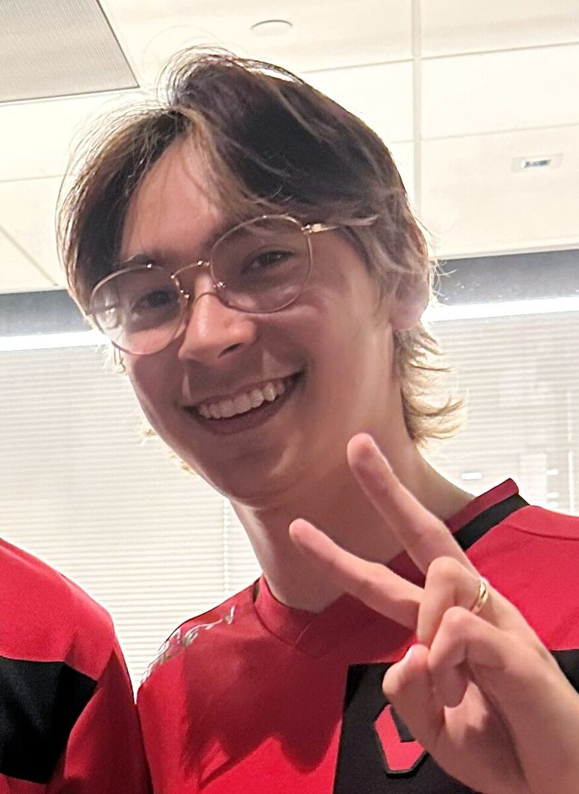

写真なし
stax
イニシエーター/コントローラー(IGL経験あり)


世界的な人気を誇るスター選手が、引退から約2年ぶりに選手として復帰します。
Masters Bangkok 2025優勝メンバーで、チームの作戦面を支えてきたベテランです。
2027年は韓国の選手3人に、北米出身のTenZとcrashies、ブラジル出身のSacyコーチが加わる「多国籍チーム」になります。コミュニケーションの言語や役割分担をどう組み立てるかが注目点です。
Masters Bangkok 2025優勝メンバー3人と、新たに加わった実績ある海外勢がどのようにかみ合うかが見どころです。2027年1月のVCT Pacific Kickoffが新体制の初陣になる予定です。
TenZの復帰で世界中から注目が集まるチーム。まずは彼のプレーを追ってみましょう。
調査日：2026-11-16